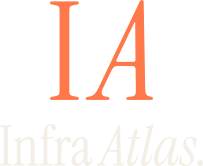
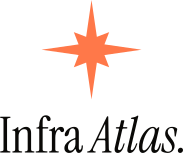
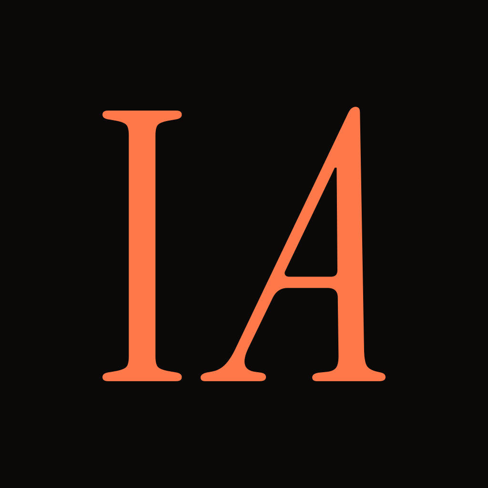

Preview · 2026-05-17 · spec: docs/plans/2026-05-17-logo-system-design.md



The mark is the "IA" monogram — roman I + italic A in Instrument Serif, mirroring the wordmark's own roman/italic split. The horizontal lockup is the primary logo; the stacked lockup is for square-ish space; the monogram alone is for favicons, nav and avatars. All SVGs are vector with the letters outlined to paths — no font dependency. Full rules: the spec doc.